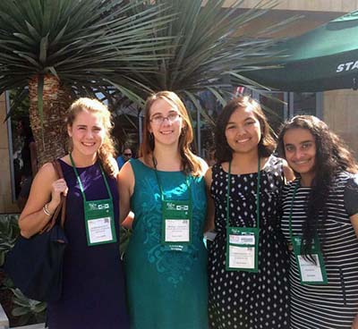

Professional Development with Olin SWE
National SWE Conference
Every year Olin sends representatives to the National SWE Conference, where we attend presentations, a huge career fair, and meet other SWE members from across the country. This year we sent 6 Olin SWE members to Los Angeles. WE15 is set to take place in Nashville, TN. Learn more about WE15 here
Lunch with Professionals
This semester Olin SWE got together to discuss working in the industry as a woman with the following companies: